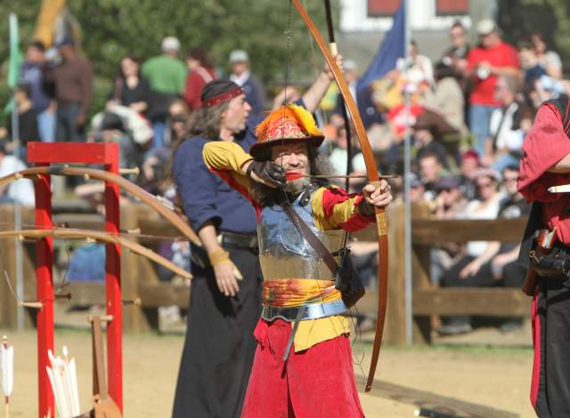
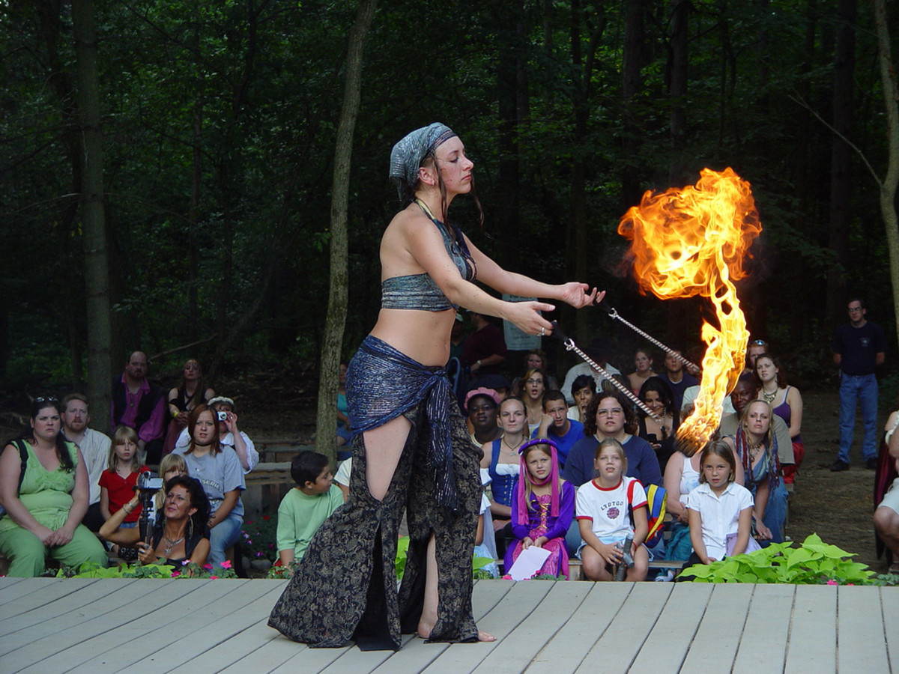
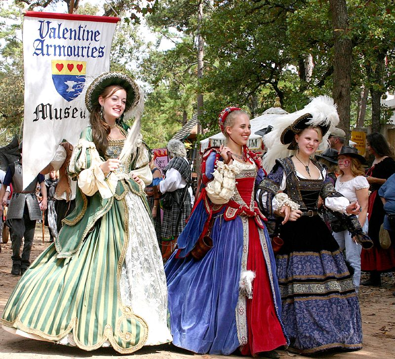

Fann Renaissance Faire media!
Fann Renaissance Faire audio
Fann Renaissance Faire video
Fann Renaissance Faire Media
Follow here so you don't miss out on any videos or updates on the Fann Renaissance Festival! If there are any announcements about the festival, this is where you will find it!
 Learn more!Fann Renaissance Faire Gallery
Look here for pictures of the Faire as it is happening! If you couldn't make it down, this will allow you to attend vicariously and wait for next year!
 Learn more!Fann Renaissance Faire Blog
Follow here for any updates and to catch up with other patrons that are attending the Faire!
 Learn more!